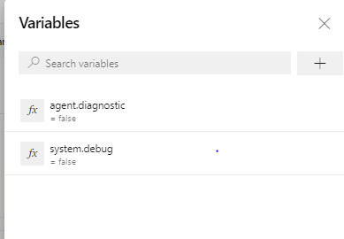
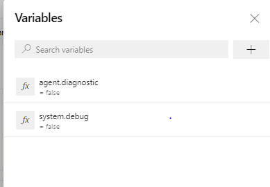

Today, Microsoft decided to break everyone's build.
So, for example, if you set the checkbox "Enable System Diagnostics", it will fail unless you have system.Debug and agent.diagnostic both in the Variables tab of your build definition, and have allowed them to be settable at queue time:
